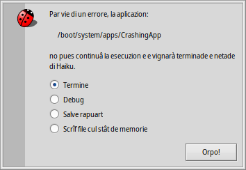

Furlan
Furlan Bahasa Indonesia
Bahasa Indonesia Català
Català Deutsch
Deutsch English
English Español
Español Français
Français Italiano
Italiano Magyar
Magyar Polski
Polski Português
Português Português (Brazil)
Português (Brazil) Română
Română Slovenčina
Slovenčina Suomi
Suomi Svenska
Svenska Türkçe
Türkçe 中文 ［中文］
中文 ［中文］ Русский
Русский Українська
Українська 日本語
日本語 Debugger
Debugger
| Deskbar: | ||
| Posizion: | /boot/system/apps/Debugger | |
| Impostazions: | ~/config/settings/Debugger settings ~/config/settings/Debugger/ |
Debugger e je une aplicazion che l'utent comun nol à di doprâ masse. E je orientade ai disvilupadôrs che a indaghin sui erôrs dai programs. Cualchi volte i erôrs a risultin in colàs e in chê volte i utents a vegnin in contat cul Debugger. Cuant che un program al colasse, tu cjatarâs chest messaç di alerte :
Al ufrìs cuatri opzions par dâ cuintri al colàs:
al netarà dut dopo il colàs de aplicazion, ma plui di cussì nol fasarà nuie altri.
al fasarà partî il Debugger par investigâ plui in profonditât.
al cree un rapuart di debug che al ven salvât come file di test sul Scritori e al pues jessi inviât vie e-mail al disvilupadôr de aplicazion che e je colassade opûr zontade a un cartelin al so bugtracker, se disponibil.
Il rapuart di debug al conten informazions sul to hardware (gjenar di CPU e memorie doprade e vie indenant), la version esate di Haiku e dutis lis informazions disponibilis sul stât dal sisteme che a puedin jessi significativis pal colàs.al cree un pussibil enormi file dulà che al ven tirât ju il stât dal sisteme. Al è miôr zontâ prime un rapuart di debug regolâr cuant che si invie une segnalazion di erôr e dome dopo furnî il file cul stât de memorie, se domandât.
La azion predefinide di cuant che al sucêt un colàs e pues jessi configurade cuntun file di test ~/config/settings/system/debug_server/settings.
Il file al cjape un formât di stîl di driver_settings come chi daurman:
default_action user
executable_actions {
app1 log
/path/app2* debug
}
I valôrs valits par une default_action a son:
| user | Domande al utent la azion. | |
| kill | Termine cidin cidin il complès colassât. | |
| debug | Zonte il debugger al complès colassât. | |
| log / report | Salve un rapuart sul colàs e termine il complès. | |
| core | Salve un (pussibilmentri une vore grant) file cul stât de memorie e termine il complès. |
Se nissune default_action e ven specificade, si doprarà "user".
La sot-sezion executable_actions e conten valôrs individuâi che a passin parsore a chei predefinîts. Chescj a cjapin la forme parsore, dulà che lis riis individuâls a puedin jessi dome un non di un complès, o un percors, cui caratars mate.
Nol à sens descrivi l'ûs dal Debugger atuâl in cheste vuide che e je indreçade aes necessitâts dal utent comun di Haiku. Par completece, chi al è il barcon che al vignarà fûr se si sielç la opzion te alerte parsore:

Butant di corse il voli tu viodarâs che cuant che tu tacarâs a tafagnâ parsore un tic tu ti rindarâs cont che il Debugger e je une des plui complicadis e sofisticadis aplicazions par Haiku. Se tu sês un disvilupadôr e tu sês abituât ai debugger grafics su altris plateformis, tantis funzionalitâts ti saran familiârs.
Chi sot a son un pôcs di colegaments che a puedin pandi un pocje di lûs su lis complessitâts dal debugger di Haiku. Se tu âs une domande specifiche, tu podaressis considerâ la idee di publicâle su la mailing list di disvilup. Se tu cjatis risorsis plui utilis, par plasê segnale un erôr cun chê informazion.
| Debugger Reference Manual | Cheste e je la sorzint plui aprofondide su ce mût lavorâ cul Debugger. | |
| Blogposts | A son un pôcs di articui sul Debugger, pal plui di Rene Gollent daspò vê implementât une gnove funzionalitât. | |
| BeGeistert 026 video | Un video de riunion di BeGeistert dal 2012, dulà che Ingo Weinhold al dimostre il stât dal Debugger di chê volte e al mostre altris struments interessants come il profiladôr par cjatâ fûr i cuei di butilie. |